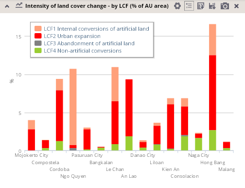
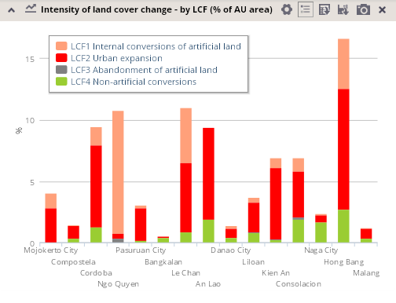
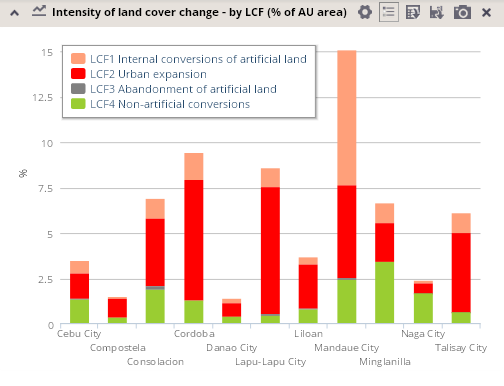
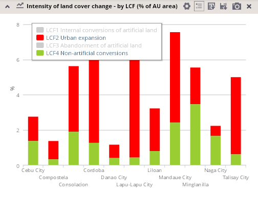
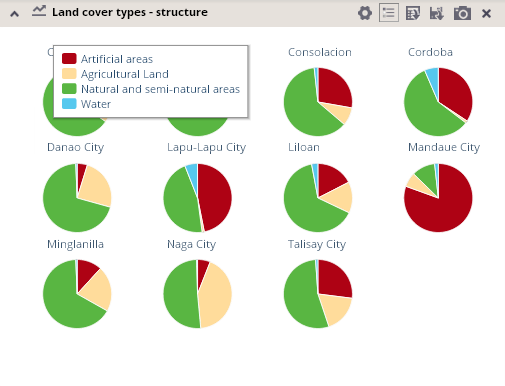
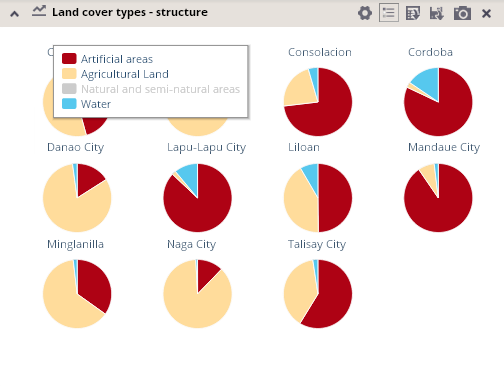

The legend button located in the panel at the top of each column or pie chart enables the display of the legend for a particular chart. 
You can display / hide the legend window for the chart by a single click on the button.
 

A legend displayed in a chart also provides you a possibility to modify the chart's appearance via switching off/on classes that should be currently displayed in the chart.
Once the legend is displayed, one or more classes could be displayed/hidden by a single click on the corresponding item or via a label in the legend.

